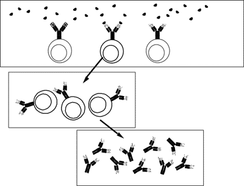
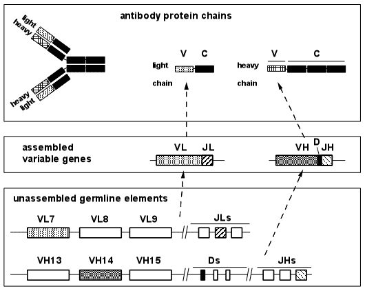
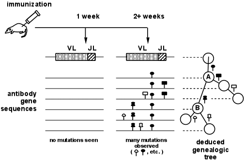

Die Evolution verbesserter Fitness
Durch zufällige Mutation plus Selektion
von Edward E. Max, M.D., Ph.D.
|
Korrespondenz mit Kritikern Im Juni 2000 schlug ein Leser dieses TalkOrigins-Artikels vor, dass ich eine Antwort von Dr. Lee M. Spetner einhole. Spetners Buch „Not by Chance" greift die Theorie der Evolution mit Argumenten aus der Informationstheorie an, um eine schlecht artikulierte „Kreation"-Alternative zu stützen. Ich Emailed Spetner, und es folgte eine ausgedehnte (und meiner Ansicht nach interessante) Korrespondenz, die wir vereinbart haben, mit dem vorliegenden Artikel zu verlinken. Die ungeschnittene Korrespondenz ist schwer zu verfolgen. Es wurden keine Längenbeschränkungen für uns beide festgelegt, und viele von uns beiden vorgebrachten Punkte wurden in Kommentaren, die sich über mehrere aufeinanderfolgende E-Mails erstreckten, von der anderen Seite behandelt. Um die Korrespondenz lesbar zu machen, habe ich die verschiedenen Argumente, die für eine bestimmte Frage im Streit relevant sind, zusammengetragen. Meine bearbeitete Version ist hier verlinkt. Diese Version enthält die meisten Argumente, die für die Korrespondenz zentral sind, wurde aber aufgrund von Zeitmangel einige ausgelassen. Diese bearbeitete Version wurde von Spetner nicht genehmigt, und er wird wahrscheinlich weitere Widerlegungen vorlegen. Die Korrespondenz wird regelmäßig aktualisiert, sofern Zeit vorhanden ist. Dr. Ross Olson, ein kreationistischer Kinderarzt, besuchte meine Debatte mit Dr. Duane Gish am 22. Februar 2001 und initiierte eine E-Mail-Korrespondenz mit mir. Nachdem ich meinen Artikel auf der TalkOrigins-Seite gelesen hatte, auf die Sie jetzt schauen, veröffentlichte Olson eine Kritik auf einer kreationistischen Website, die er unterhält. Olsons Kritik argumentiert gegen Punkte, die ich im Artikel, in der Debatte und in unserer Korrespondenz vorgebracht habe. Seine Website verlinkt nun auf eine Widerlegung von mir, eine zweite Kritik von ihm und eine zweite Widerlegung von mir. Meine Widerlegungen werden ebenfalls hier auf dem TalkOrigins-Server verfügbar sein. |
1. Einleitung
Die Evolutionstheorie umfasst eine Reihe von Ideen, die manche Menschen intuitiv schwer akzeptieren können. Eine der schwierigsten scheint die Vorstellung zu sein, dass die komplexen und voneinander abhängigen Strukturen, die wir bei modernen Pflanzen und Tieren beobachten, durch zufällige genetische Mutationen entstanden sind, die im Laufe der Zeit ausgewählt wurden. Für manche Menschen ist es viel einfacher zu glauben, dass die schönen und funktionalen Merkmale des menschlichen Auges, zum Beispiel, von einem intelligenten Schöpfer entworfen wurden, als sich vorzustellen, wie sie durch zufällige Ereignisse entstanden sein könnten. Kreationisten nutzen diese konzeptionelle Schwierigkeit aus und präsentieren mehrere Argumente, die darauf hindeuten, dass zufällige Mechanismen niemals zu einem einzigen funktionierenden Protein, geschweige denn zu einem Auge führen könnten. Diese Argumente können durch theoretische Gegenargumente widerlegt werden; dennoch haben viele Menschen Schwierigkeiten, diese Gegenargumente auf einer intuitiven Ebene zu akzeptieren. Was überzeugend wirken könnte, wäre ein klares Beispiel bei lebenden Organismen, das zeigt, wie zufällige Mutationen plus Selektion zu verbesserter „Fitness" führen können. Vor einiger Zeit wurde mir klar, dass genau ein solches Beispiel durch Experimente bereitgestellt wurde, die mit meiner eigenen Laborforschung zu tun haben, die sich mit den Genen befasst, die die Proteine des Immunsystems, die als Antikörper bekannt sind, kodieren. Da Antikörpergene der allgemeinen Öffentlichkeit nicht gut bekannt sind, habe ich mich entschlossen, diesen Artikel zu schreiben, in der Hoffnung, dass er für Leser nützlich sein könnte, die von den kreationistischen Argumenten verwirrt sind.
1.1 Die kreationistische Sicht auf zufällige Mutation und Selektion
Bevor wir über Antikörpergene sprechen, lohnt es sich, zu betrachten, was die Kreationisten über Zufall versus Design sagen. Konzentrieren wir uns auf drei Lieblingsargumente der Kreationisten, die überzeugend wirken, weil sie einige wahre Elemente und einige gültige Logik enthalten.
1.1.1 Mutationen als schädlich
Zunächst verkünden Kreationisten, dass Mutationen schädlich sind. Nach Ansicht der Kreationisten, wenn man eine gut funktionierende komplexe biologische Maschine zufälligen Änderungen unterwirft, kann man kaum erwarten, Verbesserungen erzielt zu haben, und wird mit ziemlicher Sicherheit das Organismus geschädigt haben. Kreationisten weisen darauf hin, dass alle klassischen Mutationen, die beim Menschen beobachtet wurden, nachteilig sind und genetische Erkrankungen wie Sichelzellenanämie, Muskeldystrophie, zystische Fibrose und Krebs-Syndrome verursachen. Ein einziges klares Beispiel einer vorteilhaften menschlichen Mutation wurde nicht beschrieben. Um adaptive Veränderungen in Populationen zu erklären – wie zum Beispiel die berühmte Verdunkelung der Population des Birkenspanners (welche eintrat, als die durch die Schwerindustrie verursachte Ruß-verdunkelten Bäume hellfarbige Motten zu leichteren Zielen für hungrige Vögel machten) – argumentieren die Kreationisten, dass die Varianten-Gene für dunkle und helle Farbe in der ursprünglichen Population vorhanden waren, von einem Schöpfer entworfen, um Motten in verschiedenen Umgebungen leben zu lassen; in dieser Sicht ergab sich der Übergang zu einer dunkleren Färbung in der Mottenpopulation aus Verschiebungen in den Frequenzen bestehender entworfener Gene, ohne dass neue zufällige Mutationen erforderlich waren. Nach Ansicht der Kreationisten besteht die wesentliche Beziehung zwischen natürlicher Selektion und Mutationen darin, dass die Selektion konservativ wirkt, um Individuen mit Mutationen auszusortieren und die Ausbreitung von Mutationen in eine Population zu verhindern.
1.1.2 Informationstheorie
Es wurden mehrere formale Argumente vorgebracht, wonach zufällige Mutationen den Informationsgehalt eines Systems nicht erhöhen können. Da der Informationsgehalt des menschlichen Genoms weitaus größer ist als der von Bakterien, steht die Grundlage der Evolution durch Mutation und natürliche Selektion infrage, wenn Mutationen keine Rolle bei dieser Zunahme spielen können.
1.1.3 Statistisches Argument
Ein letztes Argument, das von Kreationisten gegen die Rolle zufälliger Mutationen bei biologischen Ursprüngen vorgebracht wird, ist eine statistische Berechnung, die angeblich die Unmöglichkeit eines evolutionären Ursprungs von Proteinen beweist. Ein Protein ist ein großes biologisches Molekül, das aus kleineren Untereinheiten besteht, den sogenannten Aminosäuren, die zu einer linearen Kette verknüpft und dann in eine präzise dreidimensionale Struktur gefaltet werden. Es gibt zwanzig verschiedene Arten von Aminosäuren in Proteinen, und die spezifische Sequenz dieser Aminosäuren bestimmt die endgültige Form und Eigenschaften eines gegebenen Proteins. Ein typisches Protein besteht aus hundert oder mehr Aminosäuren in einer streng definierten Reihenfolge. Die Kreationisten fragen: Wie groß ist die Wahrscheinlichkeit, dass die korrekte Sequenz der Aminosäuren eines spezifischen Proteins – zum Beispiel die 141 Aminosäuren des menschlichen, sauerstofftransportierenden Proteins namens Globin – zufällig ausgewählt wurde? Die Gesamtzahl der möglichen 141 langen Aminosäuresequenzen beträgt 20141, eine Zahl, die so unvorstellbar riesig ist, dass die statistische Wahrscheinlichkeit, dass die tatsächliche Globin-Sequenz jemals aus einer zufälligen Auswahl von Aminosäuren entsteht, vernachlässigbar klein ist. In einer bildhaften Analogie neigen die Kreationisten dazu, die Wahrscheinlichkeit, eine Proteinsequenz durch dieses zufällige Auswahlmodell korrekt zusammenzusetzen, mit der Wahrscheinlichkeit zu vergleichen, dass ein durch einen Schrottplatz wehender Tornado ein 747-Flugzeug zusammenbauen könnte.
1.2 Widerlegung der Argumente der Kreationisten
1.2.1 Sind alle Mutationen schädlich?
Während es wahr ist, dass die meisten Mutationen entweder schädlich sind, wie die Kreationisten es vorschlagen, oder neutral, übersehen die Kreationisten eine entscheidende Tatsache: vorteilhafte Mutationen treten auf, auch wenn sie sehr selten sind. Kann eine vorteilhafte Mutation, die einmal in einer Million Individuen auftritt, wirklich zur Evolution beitragen? Ja, sie kann, da eine seltene vorteilhafte Mutation den Individuen, die sie tragen, einen Überlebens- oder Fortpflanzungsvorteil verschaffen kann, wodurch sie – über mehrere Generationen hinweg – zur Verbreitung dieser Mutation in einer Population führt. Vorteilhafte Mutationen, die in mehreren verschiedenen Individuen in mehreren verschiedenen Genen auftreten, können gleichzeitig sich in einer Population ausbreiten und können von aufeinanderfolgenden Runden zusätzlicher Mutation und Selektion gefolgt werden.
Bedeutet die Tatsache, dass wir viele schädliche menschliche Mutationen kennen, aber im Wesentlichen keine klaren vorteilhaften, dass es in der menschlichen Geschichte keine vorteilhaften Mutationen gegeben hat? Ganz und gar nicht, da es eine klare Verzerrung gibt, was medizinische Wissenschaftler untersucht haben. Die menschlichen Mutationen, über die wir am meisten Bescheid wissen, sind schädlich, weil medizinische Wissenschaftler vorrangig Krankheiten untersuchen, die erhebliche Morbidität und Mortalität verursachen. Betrachten Sie die theoretische Möglichkeit, dass eine vorteilhafte Mutation in einem bestimmten menschlichen Gen aufgetreten ist; selbst wenn diese Mutation durch einen Vergleich des mutierten Gens bei einem Kind mit der unmutierten Version desselben Gens bei beiden Eltern identifiziert würde, gäbe es keinen Weg, diese Mutation jemals als vorteilhaft zu erkennen. Wenn die Mutation Intelligenz, Stärke, Lebensdauer oder spezifische Krankheitsresistenz erhöhte, wäre dies ohne langfristige Zuchterfahrungen, die offensichtlich niemals an Menschen durchgeführt werden könnten, nie offensichtlich. Daher kann unsere Unwissenheit über Beispiele nicht als Beweis dafür genommen werden, dass sie nicht existieren. Die Experimente, die notwendig sind, um eine vorteilhafte Mutation nachzuweisen, können jedoch mit Labororganismen durchgeführt werden, die sich schnell vermehren, und tatsächlich haben solche Experimente gezeigt, dass seltene vorteilhafte Mutationen auftreten können. Zum Beispiel kann man aus einem einzelnen Bakterium eine Population in Anwesenheit eines Antibiotikums anbauen und nachweisen, dass Organismen, die dieser Kultur überleben, Mutationen in Genen aufweisen, die Antibiotikaresistenz verleihen. In diesem Fall (im Gegensatz zur Situation mit den Populationen des Birkenspanners, die oben beschrieben wurden) ermöglicht die Herkunft der Population von einem einzelnen Bakterium Vergleiche der mutierten Gene mit den entsprechenden Genen des ursprünglichen Bakteriums, wodurch bestätigt wird, dass die Variantensequenzen vor der Kultur mit Antibiotika nicht vorhanden waren und daher als de novo vorteilhafte Mutationen entstanden sind.
1.2.2 Informations-theoretische Argumente
Während eine detaillierte mathematische Betrachtung der Informationstheorie den Rahmen dieses Artikels sprengt, adressieren keine der mir bekannten kreationistischen Argumente, die auf der Informationstheorie basieren, angemessen den offensichtlichen Anstieg an Information, der auftreten kann, wenn ein Gen dupliziert wird und die beiden Kopien unabhängige Mutationen erfahren, was zu zwei Genen mit etwas unterschiedlichen Funktionen führt. Gen-Duplikation, Mutation und Selektion sind alle bekanntlich aufgrund natürlicher biochemischer Prozesse bei einer Vielzahl von Organismen, die im Labor untersucht werden, zu erfolgen. Viele Genfamilien sind bekannt, deren Mitglieder Proteine kodieren, die eine verwandte Struktur und eine verwandte, aber distincte Funktion aufweisen. Jede Familie kann durch multiple Gen-Duplikationen gefolgt von zufälliger Mutation und Differenzierung der Funktionen der einzelnen Genkopien erklärt werden. Offensichtlich stellt die Expansion von einem einzelnen urtümlichen Gen zu einer großen Familie von Genen mit distincten Funktionen einen Anstieg an genetischer Information dar.
Ein Beispiel, das ich bereits in einem anderen Beitrag auf Talk.Origins erwähnt habe, ist die Hämoglobin/Myoglobin-Familie. Das Gen für ein ursprüngliches Sauerstoff-bindendes Protein wird als verdoppelt angesehen, was zu getrennten Genen führte, die Myoglobin (das Sauerstoff-bindende Protein der Muskeln) und Hämoglobin (das Sauerstoff-bindende Protein der roten Blutkörperchen) kodieren. Anschließend wurde das Hämoglobin-Gen verdoppelt, und die Kopien differenzierten sich in die Formen Alpha und Beta. Später wurden sowohl das Alpha- als auch das Beta-Hämoglobin-Gen mehrfach verdoppelt, wodurch ein Cluster von Hämoglobin-alpha-bezogenen Sequenzen und ein Cluster von Hämoglobin-beta-bezogenen Sequenzen entstanden. Die Cluster umfassen funktionelle Gene, die sich leicht unterscheiden, zu unterschiedlichen Zeiten während der Entwicklung vom Embryo zum Erwachsenen exprimiert werden und Proteine kodieren, die speziell an diese Entwicklungsperioden angepasst sind. Weitere Beispiele für Genfamilien, die sich apparently durch solche Verdopplung und Differenzierung entwickelt haben, umfassen die Immunglobulin-Superfamilie (die eine große Vielfalt an Zelloberflächenproteinen umfasst), die Familie der sieben-Membran-spannenden Domänen-Proteine (einschließlich Rezeptoren für Licht, Gerüche, Chemokine und Neurotransmitter), die G-Protein-Familie (von deren einigen Mitgliedern die Signale der Proteine der sieben-Membran-spannenden Domänen-Familie übertragen werden), die Serin-Protease-Familie (Verdauungs- und Blutgerinnungsproteine) und die Homeobox-Familie (Proteine, die für die Entwicklung kritisch sind). Ein großer Teil des Informationszuwachses in unseren Genomen im Vergleich zu denen von „niedrigeren" Organismen scheint auf eine solche Genverdopplung gefolgt von unabhängiger Evolution und Differenzierung der verdoppelten Kopien in mehrere Gene mit unterschiedlicher Funktion zurückzuführen zu sein. Wenn eine Informations-Theorie-Analyse behauptet, dass zufällige Mutationen nicht zu einem Informationszuwachs führen können, aber die Analyse die Genverdopplung und Differenzierung durch unabhängige Mutationen ignoriert, ist eine solche Analyse als Modell für die Genevolution irrelevant, unabhängig von ihrer mathematischen Sophistikhät.
Obwohl der Zweck dieser Veröffentlichung nicht darin besteht, Dawkins zu verteidigen, sondern ein anderes, biologisches Modell von Mutation und Selektion zu beschreiben, haben sich so viele Leser gemeldet, um dieselben drei zusätzlichen Bedenken bezüglich Dawkins's Simulation zu äußern, dass ich mich verpflichtet fühle, diese zu erörtern.
1. Die Zielsequenz wurde von einem intelligenten Designer vorgegeben. Tatsächlich ist die Tatsache, dass die Zielsequenz im „Wiesel"-Modell im Voraus gewählt wurde, eine unvermeidbare Konsequenz des Ziels von Dawkins, das Ein-Schritt-Selektionsmodell mit dem Modell mehrerer sequentieller Runden von Mutation und Selektion zu kontrastieren. Auch das kreationistische Ein-Schritt-Modell beginnt mit einer spezifischen Proteinsequenz und versucht dann, die Wahrscheinlichkeit zu berechnen, diese Zielsequenz durch einen einzelnen Selektionsschritt aus zufälligen Sequenzen zu erreichen; somit wird für beide Modelle eine Zielsequenz im Voraus spezifiziert. (Übrigens ist es für die Frage, ob sie durch ein Verfahren, das Zufälligkeit und Selektion beinhaltet, neu erzeugt werden kann, irrelevant, ob diese Zielsequenz ursprünglich aus einem Intelligent Design oder einem evolutionären Prozess stammt. Insbesondere ist Dawkins' Wahl einer 28-Buchstaben-Linie von Shakespeare statt einer 28-Residuen-Aminosäuresequenz aus einem bekannten Protein irrelevant für die Beurteilung der relativen Effektivität der beiden Verfahren bei der Reproduktion der Zielsequenz.) Das Ergebnis von Dawkins' Übung zeigt, dass das Ein-Schritt-Verfahren im Wesentlichen unfähig ist, die Zielsequenz innerhalb eines angemessenen Zeitrahmens zu erreichen, während das sequentiell-Schritt-Verfahren die gleiche vorab festgelegte Zielsequenz leicht erreichen kann. Dieser Unterschied ist das einzige, was Dawkins zeigen wollte. Daher ist die Beschwerde, dass „die Spezifikation der Zielsequenz im Voraus Dawkins' Ergebnis schwächt", nicht gültig, da dieses gleiche Merkmal (die Spezifikation einer Zielsequenz im Voraus) gleichmäßig auf beide Modelle angewendet wird, wie es zum Vergleich ihrer Effektivität erforderlich ist.
2. Das Modell unterscheidet sich von der Evolution Wie gut simuliert Dawkins' Modell die Evolution? Um diese Frage zu beantworten, muss man festlegen, ob die Simulation die Abiogenese (den Ursprung des Lebens aus Nicht-Leben) oder die Evolution von bereits existierenden Lebensformen modelliert. Über die Abiogenese ist fast nichts bekannt, und die beteiligten Mechanismen sind hochgradig spekulativ; im Gegensatz dazu stützt eine große Menge an Beweisen die Evolution durch gemeinsame Abstammung, wobei die natürliche Selektion eine bedeutende Rolle spielt. Dawkins' Modell scheint nicht genau auf die Abiogenese oder die Evolution zuzutreffen. Das Modell geht davon aus, dass ein Mechanismus existiert, um bestehende Kopien der Sequenz zu replizieren, um eine "Nachkommenschafts"-Generation zu erzeugen. Dies deutet darauf hin, dass die Simulation ein Modell für einen Prozess in der Evolution darstellt, der zu einem Zeitpunkt stattfindet, an dem das Leben – einschließlich der Fortpflanzung – bereits entstanden ist. Sobald das Leben entstanden ist, wird die Evolution eines Proteins aus zufälligen Aminosäuresequenzen nicht als der übliche Mechanismus angesehen, durch den neue Proteine in der Evolution entstehen; stattdessen entstehen neue Proteine durch Modifikation bereits existierender Proteinsequenzen, in der Regel nach einer Gen-Duplizierung. Einige Proteine mit im Wesentlichen zufälligen Aminosäuresequenzen werden jedoch durch Frameshift-Mutationen (die dazu führen, dass eine kodierende Sequenz in einem falschen Triplet-Leserahmen gelesen wird) oder durch Splicing-Mutationen (die nicht-kodierende Intron-Sequenzen in kodierende Sequenzen umwandeln) erzeugt. Diese Prozesse könnten in einem früheren Stadium des „proto-life" häufiger aufgetreten sein, zu einer Zeit, als ein Replikationsmechanismus entstanden war, aber weniger genau war als die Replikation heute. Ein entscheidender Bestandteil von Dawkins' Modell ist, dass eine dieser zufälligen Proteinsequenzen eine winzige Aktivität aufweisen könnte, die auf irgendeine Weise nützlich ist, wahrscheinlich durch Wechselwirkung mit anderen Materialien in ihrer Umgebung, wodurch das Protein einen selektiven Vorteil bieten kann, der dazu tendiert, seine Häufigkeit in späteren Generationen durch natürliche Selektion zu erhöhen. Dann könnte jede nachfolgende Mutation eine leichte Steigerung der Effizienz dieser Funktion bereitgestellt haben, die es dem mutierten Protein ermöglicht, frühere Versionen des Proteins durch weitere Selektion zu ersetzen. In diesem Modell muss jeder Schritt eine Steigerung der Effizienz bewirken, im Gegensatz zur kreationistischen Idee, dass keine selektierbare Funktion existieren kann, bis die finale Sequenz erreicht ist.
3. Keine zufällige Sequenz kann eine Funktion haben Viele Leser haben sich beschwert, dass Dawkins' Modell unrealistisch sei, weil – wie sie annehmen – keine zufällige Sequenz eine Funktion haben könnte, die auch nur eine minimale Selektion zur Verbesserung erlauben würde. Ist diese Annahme korrekt? Um diese Frage in Worten zu formulieren, die für die Evolution relevanter sind: Wie viele verschiedene zufällige Aminosäuresequenzen müssten getestet werden, bevor eine gefunden werden könnte, die eine gewünschte Eigenschaft auch nur in minimaler Hinsicht aufweist? Einige Kreationisten behaupten, diese Zahl sei größer als die Anzahl der Atome im Universum. Das im vorliegenden Aufsatz beschriebene Antikörper-Modell deutet darauf hin, dass diese Zahl viel kleiner ist. Ihr Immunsystem kann Antikörper-Proteine produzieren, die spezifisch an fast jedes fremde Protein binden – selbst an Proteine, die von Biotech-Firmen entwickelt wurden und noch nie von einem Immunsystem zuvor angetroffen wurden, sodass Ihre Antikörper nicht „entworfen" worden sein könnten, um an sie zu binden. Offensichtlich ist die endliche „Bibliothek" der Antikörper in Ihrem Körper – generiert durch die zufällige Mix-and-Match-Strategie, die in diesem Aufsatz beschrieben wird – bereits groß genug, sodass einige Antikörper an fast jedes bestimmte Ziel binden werden. Jeder dieser Antikörper, der die gewünschte Bindungseigenschaft aufweist, kann dann durch aufeinanderfolgende Runden von Mutation und Selektion verbessert werden. Wenn quasi-zufällige Antikörpersequenzen gefunden werden können, die an fast jede antigenische Herausforderung binden, deutet dies darauf hin, dass eine spezifische gewünschte Funktion in einer relativ kleinen Anzahl von zufälligen Aminosäuresequenzen gefunden werden kann, wodurch Dawkins' Modell nicht so unrealistisch ist, wie Kreationisten behaupten. Ich plane, in einem zukünftigen Aufsatz die funktionellen Möglichkeiten zufälliger Proteinsequenzen weiter auszuführen.
Daher entspricht Dawkins Simulation zwar nicht genau dem üblichen Modell der Evolution eines Proteins aus einer bereits bestehenden Sequenz, sie passt jedoch einem möglichen Szenario im Kontext der Evolutionstheorie. Im Gegensatz dazu entspricht das Ein-Schritt-Selektionsmodell nichts in der Evolutionstheorie. Das Ein-Schritt-Modell wird von Kreationisten ausgenutzt, da sie behaupten können, dass naive Zuhörer glauben, es werde durch die evolutionistischen Begriffe „zufällig" und „Selektion" impliziert; danach können sie dieses Strohmann-Argument durch die Unmöglichkeit der Erzielung einer Zielsequenz entkräften. Sie erwähnen nicht, dass ein alternatives Modell, das „zufällig" und „Selektion" beinhaltet – das sequenzielle Mehr-Schritt-Modell, das die Evolutionstheorie genauer widerspiegelt – eine Zielsequenz leicht erreichen kann . |
1.2.3 Statistische Unmöglichkeit von Proteinen?
Was ist mit dem Argument bezüglich der statistischen Unwahrscheinlichkeit, eine spezifische Sequenz aus 141 Aminosäuren zu erhalten, indem man nach der richtigen Sequenz unter zufällig generierten Sequenzen sucht? Sicherlich könnte dieser Mechanismus den Ursprung von Proteinsequenzen nicht erklären, aber die kreationistische Behauptung, dass dieser Mechanismus Teil der Evolutionstheorie sei, ist falsch; es handelt sich um einen „Strohmann" – eine falsche kreationistische Karikatur der Evolution –, die wiederholt von Kreationisten verwendet wird, um naive Zuhörer zu täuschen und zu glauben, dass die Evolution unlogisch sei. Es ist falsch, weil es eine spezifische Sequenz in EINEM Auswahlschritt aus einem Pool zufälliger Sequenzen fordert, während das echte evolutionäre Modell für den Ursprung von Proteinsequenzen mehrere RUNDEN ZUFÄLLIGER MUTATIONEN gefolgt von mehreren Auswahl schritten umfasst, wie oben dargelegt.
In einer schönen Diskussion über den Unterschied zwischen diesen beiden Modellen simulierte der britische Biologe Richard Dawkins (The Blind Watchmaker, New York, 1986) das von Kreationisten inszenierte Strohmann-Karikatur auf einem Computer. Er programmierte den Computer, zufällige Sequenzen zu generieren, um zu sehen, ob er jemals einen Satz aus Hamlet erzeugen würde: „Methinks it is a weasel." Dieser Satz hat 28 Zeichen (einschließlich Leerzeichen), sodass der Computer programmiert wurde, 28 Auswahlentscheidungen aus den 27 möglichen Zeichen (26 Buchstaben plus Leerzeichen) zu treffen. Eine typische Ausgabe war
MWR SWTNUXMLCDLEUBXTQHNZVJQF
Da es 2728 verschiedene Möglichkeiten gibt, aus 27 Alternativen 28 Mal auszuwählen, kann man die Wahrscheinlichkeit berechnen, die richtige Sequenz zu treffen, und basierend auf der Geschwindigkeit des Computers abschätzen, wie lange man im Durchschnitt warten müsste, bis die richtige Sequenz ausgedruckt wird. Dawkins schätzte eine Million-Million-Million-Million-Million Jahre. Wenn dies die beste Art wäre, die Protein-Evolution zu konzipieren – durch Selektion in EINEM Schritt aus zufälligen Sequenzen – könnte man zusammen mit den Kreationisten schließen, dass eine Proteinsequenz sich nicht hätte entwickeln können. Doch das einstufige Selektionsmodell der Kreationisten ist eindeutig ein „Strohmann", der darauf ausgelegt ist, das Konzept der Zufälligkeit als Bestandteil der Evolution zu verspotten. Das echte Modell der Evolutionisten besagt, dass moderne Aminosäuresequenzen sich durch aufeinanderfolgende Schritte entwickelten, bei denen zufällige Mutationen bereits existierender Sequenzen der Selektion unterzogen wurden; jeder seltene Mutant, der eine effizientere Funktion bot, wurde an zukünftige Generationen weitergegeben, in denen der Prozess der Mutation und Selektion immer wieder wiederholt wurde. Als Dawkins sein Computerprogramm, das die Strohmann-„Kreationisten-Version" der Evolution simuliert hatte, beendete und ein Programm schrieb, das die „Evolutionisten-Version" der Evolution besser annäherte, waren die Ergebnisse der Simulation ganz anders. Dawkins programmierte den Computer, eine Anfangssequenz zufällig zu generieren, wie im ersten Modell, und der Computer produzierte:
WSLMNLT DTJBKWIRZRESLMQCO P
Dann, im Anschluss an Dawkins' überarbeitetes Programm, erstellte der Computer mehrere Kopien (Nachkommen) dieser Sequenz, während er in die Kopien zufällige „Fehler" (Mutationen) einführte. Der Computer untersuchte alle mutierten Nachkommen und wählte denjenigen aus, der die größte Ähnlichkeit (wie auch immer gering) zur Zeile aus Hamlet aufwies. Diese ausgewählte Sequenz diente als Grundlage für eine weitere Generation von Nachkommen mit weiteren Mutationen, aus der wiederum die beste Kopie ausgewählt wurde – und so weiter. Bis zur zehnten Generation war die Sequenz „evolviert" zu
MDLDMNLS ITJISWHRQREZ MECS P
Bis zu dreißig Generationen war es:
MEINEN SIE, ES SEI WIE WECSEL
Statt Millionen von Jahren benötigte der Computer etwa eine halbe Stunde, um METHINKS IT IS LIKE A WEASEL zu generieren, und zwar in der vierunddreißigsten Generation. Somit ist ein kumulatives mehrstufiges Modell als Modell für die Evolution keineswegs unplausibel, sofern sowohl ein Mechanismus zur Vervielfältigung unvollkommener Kopien als auch ein starker Selektionsdruck vorliegen. (Der Vervielfältigungsmechanismus ist natürlich eine große „Gegebenheit"; wie sich ein solcher Mechanismus entwickelt haben könnte, ist eine separate Frage zum Ursprung des Lebens und nicht zu seiner Evolution, und ist nicht Gegenstand dieses Artikels.) Die Bedeutung von Dawkins' Simulation besteht darin, dass sie den Fehler aller kreationistischen Argumente gegen die statistische Unwahrscheinlichkeit der Evolution aufzeigt, indem sie demonstriert, dass die Wahl der Kreationisten zwischen einem einstufigen versus einem kumulativen mehrstufigen Modell zu einer falsch niedrigen Schätzung des Potenzials führt, eine bestimmte Sequenz durch zufällige Mutation und Selektion zu ableiten. Obwohl sowohl das einstufige Modell als auch das kumulative mehrstufige Modell zufällige Sequenzen und Selektion beinhalten, sind die vorhergesagten Konsequenzen der beiden Modelle sehr unterschiedlich. Die Kreationisten ignorieren diesen Unterschied und diskutieren absichtlich nur das Modell, das das Ergebnis liefert, das sie mögen, obwohl dieses Modell der Theorie der Evolution am wenigsten entspricht.
Der kreationistische Duane Gish hat Dawkins' Computermodell mit der Kritik verspottet, dass der letzte Satz aus Hamlet nur durch ein intelligent designedes Programm erreicht wurde, das auf einem intelligent designeden komplexen Computer läuft; die Notwendigkeit eines intelligenten Designs, um eine komplexe Sequenz zu erreichen, ist, so Gish, genau das, was die Kreationisten von Anfang an behaupten. (Siehe auch diese Webseite.) Bei Debatten zwischen Kreationismus und Evolution ist dieses Argument ein effektiver kreationistischer Trick, da das Publikum die Fehlschlüsse in der Regel nicht schnell genug erkennt, bevor die Debatte zu anderen Themen übergeht. Bei Nachdenken ist jedoch klar, dass Gish's Argument falsch ist, weil es die Notwendigkeit eines intelligenten Designs bei der Durchführung der Simulation (eine Notwendigkeit, die niemand bestreitet) mit der Notwendigkeit eines Designs bei dem, was simuliert wird, vermischt; und es ist letzteres, worum es bei der Frage geht. Um diese Unterscheidung klar zu machen, betrachten Sie folgendes Beispiel. Angenommen, ein Computermodell von Wetterbedingungen ist in der Lage, einen Regenguss vorherzusagen; niemand wird vernünftigerweise bestreiten, dass der Computer und die Wetter-Simulationssoftware intelligent designed wurden, aber dies impliziert nicht, dass der Sturm selbst von einem Designer erschaffen wurde. Das designede Computerprogramm ist nur ein analytisches Werkzeug zum Studium des natürlichen Prozesses, und die Notwendigkeit von Intelligenz für die Analyse sagt nichts über die Notwendigkeit von Intelligenz im natürlichen Prozess aus. Ähnlich impliziert das intelligente Design, das in Dawkins' Computer und Simulationsprogramm einfließt, keineswegs, dass die Prozesse, die simuliert werden – zufällige Mutation und Selektion – ein intelligentes Design erfordern. (Für eine Diskussion anderer Kritikpunkte an Dawkins' Simulation, siehe das Kästchen oben.)
2. Antikörper-Gene
Trotz des logischen Fehlers in der Ablehnung von Dawkins' Simulation durch Kreationisten führte die verlockende Anziehungskraft dieses Arguments dazu, dass ich dachte, es könnte am deutlichsten widerlegt werden, wenn man ein biologisches Beispiel anführen könnte, in dem – ohne die Intervention eines intelligenten Gestalters – aufeinanderfolgende Runden von Mutation und Selektion unzweifelhaft zu einer erhöhten Fitness innerhalb lebender Organismen führen. Wie sich herausstellte, machte meine eigene Laborforschung im Bereich der Antikörpergene mich mit Experimenten vertraut, die genau ein solches biologisches Beispiel zeigten. Dieses Beispiel – somatische Mutation und Selektion von Antikörpergenen – sollte es den Kreationisten sehr erschweren, weiterhin darauf zu bestehen, dass zufällige Mutationen immer schädlich sind und nicht zu einer verbesserten Funktion in einem echten biologischen System führen können. Um die Schönheit der mutativen Evolution von Antikörpergenen zu würdigen, ist es notwendig, als Hintergrund das tiefe Rätsel zu verstehen, das dieses System vor der rekombinanten DNA-Technologie stellte, die es ab Ende der 1970er Jahre ermöglichte, Antikörpergene direkt zu untersuchen. (Die folgende Diskussion kann möglicherweise mehr Informationen enthalten, als Sie je über Antikörpergene wissen wollten, aber dieses Material ist notwendig, um die Biologie des evolutionären Modells, das ich beschreiben werde, wirklich zu verstehen. Für Leser, die diesen Hintergrund überspringen möchten, liegt das Herzstück des Arguments in den Abschnitten 4 und 5.)
Es ist allgemein bekannt, dass ein Kind, das Masern bekommt und sich dann erholt, gegen weitere Angriffe durch dieses Virus immun ist. Tatsächlich kann Immunität gegen diese oder andere Krankheiten auch ohne Krankheit erzeugt werden, wenn verschiedene abgeschwächte Formen von Viren, Bakterien und bakteriellen Toxinen als Impfstoffe verabreicht werden. Der Schutz, der durch solche Impfstoffe entsteht, ist nicht auf eine allgemeine Stärkung der Abwehrkräfte des Körpers zurückzuführen, sondern ist hochspezifisch; die Impfung mit einem Impfstoff, der auf einem bestimmten Stamm eines Bakteriums oder Virus basiert, schützt gegen diesen Erreger, schützt aber oft nicht vor einer Infektion durch auch nur eng verwandte Stämme. Darüber hinaus zeigten Experimente des letzten Jahrhunderts, dass die Immunität in vielen Fällen von spezifischen Proteinen abhängt, die sich nach der Impfung im Blut befinden. Diese Proteine, die Antikörper (oder Immunglobuline) genannt werden, können spezifisch an Moleküle aus dem fremden Material (oder Antigen) im Impfstoff binden. Die Bindung von Antikörpern an Antigene kann eindringende Bakterien abtöten, eindringende Viren oder Toxine neutralisieren und all dieses fremde Material für die Zerstörung durch „Müll fressende" weiße Blutkörperchen markieren. Antikörper werden von einer anderen Art weißer Blutkörperchen, dem B-Lymphozyten, in den Blutkreislauf abgegeben.
Wenn man Blutproben von einem Tier zu verschiedenen Zeitpunkten vor und nach der Immunisierung durch Injektion eines Antigens entnimmt, findet man im Allgemeinen, dass das Blut vor der Immunisierung keine signifikanten Mengen an Antikörpern enthält, die spezifisch für das Antigen sind. Mehrere Tage nach der Immunisierung beginnt der Antikörper gegen das injizierte Antigen im Blut zu steigen, wobei er oft nach einer bis zwei Wochen nach der Immunisierung einen Höhepunkt erreicht. Eine nachfolgende Injektion desselben Antigens (ein „Booster") erzeugt eine viel schnellere Reaktion mit höheren Antikörpermengen.
Ein wichtiges Merkmal der Wechselwirkung zwischen einem bestimmten Antikörper und seinem Antigen ist die Stärke der Bindung zwischen diesen beiden Molekülen; diese Stärke, die durch Experimente gemessen werden kann, hängt davon ab, wie gut die Passform zwischen den Antikörpern und dem Antigen ist, analog zur Passform einer Hand im Handschuh oder eines Schlüssels im Schloss. Im Allgemeinen nehmen während des Verlaufs einer Immunantwort die Antikörper nicht nur an Zahl zu, sondern auch an der Stärke, mit der sie das Antigen binden – ihre „Affinität". Die Affinität steigt oft noch weiter bei nachfolgenden Auffrischungsimpfungen mit Antigen. Durch eine stärkere Bindung an das Antigen sind hochaffine Antikörper bei der Ausführung ihrer schützenden Aufgaben deutlich effizienter.
Antikörper wurden frühzeitig als Proteine identifiziert – das heißt, sie bestehen aus Aminosäuren, deren Sequenz ihre Eigenschaften bestimmt, einschließlich ihrer Antigen-Bindungsspezifität. Die Informationen, die genau festlegen, welche Aminosäuren für jede Position in einer Proteinsequenz verwendet werden, sind im Gen für dieses Protein gespeichert. Für jedes Gen ist die Sequenzinformation chemisch in der Sequenz von Untereinheiten (bekannt als Nukleotide) in der langen linearen Molekülstruktur der Desoxyribonukleinsäure (DNA) kodiert. (Eine detailliertere Besprechung der DNA-Struktur und -Funktion findet sich in Abschnitt 2.1 meines Artikels Plagiarized Errors and Molecular Genetics.)
3. Drei Rätsel
Die Erkenntnis, dass unser Immunsystem in der Lage ist, – genau dann, wenn es benötigt wird – hochspezifische Antikörper gegen eine immense Anzahl von bakteriellen und viralen Antigenen zu produzieren, führte zu drei tiefgreifenden Rätseln: (1) Wie erkennt der Körper genau, welche Antikörpergene aktiviert werden müssen, um eine spezifische Infektion zu bekämpfen, sodass er genau die richtigen Antikörper produzieren kann? (2) Wie speichert unsere DNA die immense Menge an Informationen, die notwendig ist, um spezifische Antikörper gegen alle fremden Eindringlinge zu kodieren, die wir antreffen könnten? Dieses Rätsel wird durch scheinbar widersprüchliche Schätzungen verschärft, wonach eine Maus nicht mehr als 100.000 Gene hat, aber mehr als eine Million verschiedene Antikörper produzieren kann, von denen jeder seinerseits ein eigenes Gen zu benötigen scheint. (3) Wie kann der progressive Anstieg der Antikörperaffinität während einer Immunantwort erklärt werden?
3.1 Antwort #1: Klonale Selektion
Eine Antwort auf die erste Frage wurde von MacFarlane Burnet in einer Hypothese vorgeschlagen, die als "klonale Selektionstheorie" bekannt ist. (Siehe Abbildung 1.) Nach diesem Modell hat jede der Millionen B-Lymphozyten, die sich in einem Ruhezustand im Blut eines Tieres befinden, das Potenzial, zu einer aktiven Antikörper-produzierenden Zelle zu werden; aber jeder B-Lymphozyt kann nur eine Art von Antikörper herstellen, mit einer bestimmten Aminosäuresequenz und somit einer bestimmten Antigenspezifität. Vor der Immunisierung zeigt jeder ruhende B-Lymphozyt auf seiner Oberfläche eine membranständige Form des Antikörpers, den er freisetzen kann, wenn die Zelle aktiviert wird. Wenn ein Antigen – zum Beispiel Poliovirus – einem Tier injiziert wird, zirkuliert es zwischen den Lymphozyten im Körper. Die überwältigende Mehrheit der ruhenden B-Lymphozyten exprimiert Oberflächenantikörper, die sich nicht an Polio binden können; diese Zellen können durch das Virus nicht aktiviert werden und verbleiben daher in einem Ruhezustand und sezernieren keinen Antikörper. Aber das Virus wird an die seltenen B-Lymphozyten binden, die Antikörper exprimieren, die sich an Polio binden können. Die Bindung des Virus an diese Zellen löst sie zur Aktion aus: sie proliferieren und produzieren viele Tochterzellen – Klone –, alle in der Lage, Antikörper herzustellen, die sich an das Virus binden können. Dann verwandeln sich diese aktivierten Nachkommenzellen in Miniaturfabriken, die große Mengen an Anti-Polio-Antikörpern abgeben. Dieser Mechanismus erklärt, wie jedes Antigen die Produktion genau jener Antikörper auslösen kann, die sich an es binden können. Die klonale Selektionstheorie wurde durch eine Reihe von eleganten Experimenten in den 1960er Jahren bestätigt (Ada & Nossal Scientific American 257;62, 1987).
|
 |
|
Abbildung 1. Klonale Selektionstheorie. Vor der Exposition gegenüber einem Antigen zirkulieren Millionen von Lymphozyten (drei sind im oberen Panel dargestellt) in einem Ruhezustand durch den Körper. Jede Zelle zeigt auf ihrer Oberfläche viele Kopien eines Y-förmigen Antikörpermoleküls (obwohl in der Abbildung nur ein Molekül pro Zelle gezeichnet ist), aber jede Zelle produziert einen leicht unterschiedlichen Antikörper. Wenn eine Zelle ein Antigen (in der Abbildung als schwebende schwarze Dreiecke dargestellt) trifft, das ihr Antikörper binden kann, wird diese Zelle aktiviert (wie für die mittlere Zelle im oberen Panel gezeigt). Die aktivierte Zelle proliferiert zu einem Klon aus vielen Tochterzellen, die jeweils denselben Antikörper auf ihrer Oberfläche exprimieren (mittleres Panel). Die aktivierten Zellen in diesem Klon reifen dann zu Zellen, die Antikörpermoleküle in die Zirkulation sezernieren können (unteres Panel); alle diese Antikörpermoleküle können das Antigen binden, das die ursprüngliche B-Zelle ursprünglich stimuliert hat. Das hier beschriebene Modell ist eine etwas vereinfachte Version der etablierten Theorie. |
3.2 Antwort #2: Vielfalt durch kombinatorische Assemblierung
Die zweite Frage – wie die unzähligen Antigen-Spezifitäten in der DNA der Immunglobulin-Gene kodiert sind – wurde durch Sequenzanalyse homogener Antikörper und ihrer Gene gelöst. Diese Studien zeigten, dass jedes Antikörpermolekül aus vier Protein-Ketten besteht (siehe Abbildung 2): zwei identische große Proteine (schwere Ketten) und zwei identisch kleinere leichte Ketten. Die Aminosäuresequenzen dieser Ketten wiesen eine ungewöhnliche Eigenschaft auf: die ersten hundert oder so Aminosäuren jeder Kette bilden ein Domänen, das für fast jeden sequenzierten Antikörper unterschiedlich ist („variabel" oder V-Region), während der Rest der Sequenz für jede Antikörerkette einer bestimmten Klasse identisch ist („konstant" oder C-Region). (Unter den leichten und schweren Ketten gibt es etwa zehn verschiedene Klassen von Antikörerketten, doch die Unterschiede zwischen diesen Klassen sind für diese Diskussion irrelevant.) Nicht überraschend sind die variablen Domänen an der Bindung an die diversen möglichen Antigene beteiligt. Die zweite Frage, die oben betrachtet wurde, kann dann neu formuliert werden: Wie kann die Vielfalt der Aminosäuresequenzen der variablen Regionen von Antikörperproteinen in der DNA kodiert sein, und wie bleiben die konstanten Regionen konstant angesichts einer solchen Vielfalt der variablen Regionen?
|
 |
|
Abbildung 2. Aufbau von Antikörpern und deren Genen. Das obere Panel zeigt, wie das Y-förmige Antikörpermolekül (links) aus zwei identischen leichten Ketten und zwei identischen schweren Ketten besteht; die einzelnen Proteinketten sind in der Mitte und rechts dieses Panels dargestellt. In diesem Panel sind die Teile jedes Proteins, die konstante (C)-Sequenzen aufweisen, schwarz dargestellt, während die variablen (V)-Regionen grau oder schraffiert sind. Das mittlere Panel zeigt die DNA-Struktur der Gene für die variablen Regionen von Antikörpern in ihrer zusammengebauten Form, wie sie in B-Lymphozyten vorkommt. Das Gen für die variable Region der leichten Kette besteht aus zwei Elementen – VL und JL –, die miteinander verbunden sind, wohingegen das Gen für die schwere Kette aus VH-, D- und JH-Elementen besteht. Das untere Panel zeigt, wie die Elemente, die die Gene für die leichten und schweren variablen Regionen bilden, organisiert sind, bevor sie in B-Lymphozyten zusammengebaut werden. Ein Cluster aus getrennten VL-Regionen liegt in der DNA einige Distanz entfernt von dem Cluster der J-Region-Gene. Ähnlich bilden die VH-, D- und JH-Region-Gene separate Cluster. Jeder B-Lymphozyt verbindet ein VL und ein JL, um die zusammengebaute variable Region der leichten Kette zu bilden, und ein VH, ein D und ein JH, um das zusammengebaute Gen für die variable Region der schweren Kette zu bilden. |
Diese Fragen ergaben eine wirklich erstaunliche Antwort, die wie folgt in vereinfachter Form dargestellt wird. Es stellt sich heraus, dass das Gen, das jede Antikörper-Variablenregion kodiert, innerhalb jedes B-Lymphozyten durch DNA-Umordnungen entsteht, die Elemente verbinden, die in allen nicht-lymphoiden Zellen des Körpers getrennt sind (Tonegawa, Nature 302:575, 1983; siehe Abbildung 2, mittlere und untere Panels). Lymphozyten sind somit eine Ausnahme von der allgemeinen Regel, dass alle Zellen des Körpers die gleiche DNA-Sequenz besitzen. Ein Gen für die schwere Ketten-Variablenregion wird durch das Zusammenfügen von drei Elementen – bekannt als VH, D und JH – gebildet, und die vergleichbare leichte Ketten-Variablenregion besteht aus zwei Elementen: VL und JL. Diese fünf Arten von Elementen werden oft als „germline"-Elemente bezeichnet, da sie in der DNA der Keimzellen (Ei und Spermium) getrennt sind. Jeder menschliche B-Lymphozyt kann, im Stil eines chinesischen Menüs, eines VH (aus etwa 50), eines DH (aus 23), eines JH (aus 6), eines VL (aus 57) und eines JL (aus 9) auswählen; es gibt jedoch nur ein Gen für jede Klasse der konstanten Regionen, sodass diese Domänen für alle Antikörper einer gegebenen Klasse nicht variieren. Die Anzahl der möglichen verschiedenen Kombinationen dieser germline-Elemente ist beeindruckend groß, aber die Anzahl der möglichen Antikörper ist noch größer, da zusätzliche Sequenzvariationen auftreten, wo die germline-Elemente zusammengefügt werden. Das Repertoire aus dem Prozess der Variablen-Gen-Zusammenfügung – geschätzt 30 Millionen mögliche Aminosäuresequenzen aus weniger als 200 getrennten genetischen Elementen – macht es wahrscheinlich, dass für die meisten fremden Antigene Antikörper auf der Oberfläche einiger B-Lymphozyten vorhanden sind, die das Antigen binden können, vielleicht mit niedriger Affinität, aber genug, um eine Immunantwort auszulösen. Die Aufklärung der einzigartigen DNA-Umordnungen, die der Antikörper-Gen-Generierung zugrunde liegen, löste das zweite der drei Rätsel der Antikörperbildung: wie in Organismen, die nur etwa 100.000 Gene besitzen, Millionen von Antikörperstrukturen erzeugt werden können. Für seinen Beitrag zur Lösung dieses Problems wurde Susumu Tonegawa der Nobelpreis für Physiologie oder Medizin 1987 verliehen.
3.3 Antwort #3: Evolution der Affinität
Es ist bei der Betrachtung der dritten und letzten Frage – wie die Antikörperaffinität während einer Immunantwort zunimmt –, dass wir zum raison d'etre dieses Artikels gelangen, denn Untersuchungen haben eindeutig gezeigt, dass der Mechanismus des Affinitätsanstiegs, der die Effizienz der Antikörperfunktion schrittweise verbessert, zufällige Mutation und Selektion ist. Die Beweise stammen aus der Analyse mehrerer Immunantworten bei Inzuchtstämme von Mäusen, die alle dasselbe allgemeine Bild zeichnen (Wysocki et al. Proc Natl Acad Sci USA 83:1847, 1986; Griffiths et al. Nature 312:271, 1984). Die Antworten werden analysiert, indem die Antikörpergenstrukturen aus B-Lymphozyten bestimmt werden, die vor und zu verschiedenen Zeitpunkten nach der Immunisierung mit einem Antigen entnommen wurden (siehe Abbildung 3). Vor der Immunisierung und während der ersten paar Tage nach der Immunisierung exprimieren alle Antigen-bindenden Zellen Antikörpergensequenzen, die von unveränderten Kombinationen der oben beschriebenen Keimzell-Elemente abgeleitet sind. Aber beginnend nach etwa einer Woche zeigen die Sequenzen eindeutig Hinweise auf Mutation: Viele Sequenzen unterscheiden sich von den Keimzell-Elementen, aus denen sie konstruiert wurden. Da die Tiere in diesen Experimenten Inzuchtstämme sind, sind alle Individuen wie Zwillinge, die mit identischen DNA-Sequenzen in all ihren Genen geboren wurden. Insbesondere sind die Sequenzen ihrer Keimzell-Variablenregion-Gen-Elemente alle bekannt, so dass jede Immunoglobulin-Sequenz, die sich von den entsprechenden Keimzellgenen unterscheidet, das Ergebnis von Mutationen sein muss, die während der Entwicklung des B-Lymphozyten auftraten, d. h. somatische Mutationen.
|
 |
|
Abbildung 3. Der Beweis für somatische Mutationen. In diesem Experimententyp wird einem inzuchtgezüchteten Maus ein Antigen injiziert. Nach einer Woche oder zwei Wochen (oder länger) werden B-Lymphozyten aus den Mäusen gewonnen und die Sequenz des relevanten Antikörpergen (das leichte Ketten-Gen VL-JL ist in der Abbildung dargestellt) bestimmt und mit den entsprechenden Keimzell-Element-Sequenzen verglichen. Nach einer Woche sind alle Antikörpergen-Sequenzen identisch mit denen der Keimzell-Elemente, aber nach zwei Wochen können mehrere Mutationen (durch verschiedene geformte Flaggen in der Abbildung angezeigt) beobachtet werden. Mutationen, die zwischen mehreren verschiedenen Genen geteilt werden (schwarze Symbole), erlauben die Konstruktion eines Stammbaums (rechts), der die angenommene Reihenfolge der mutativen Ereignisse darstellt. In diesem Stammbaum wird die Vorläufer-B-Zelle oben gezeigt. Verschiedene Mutationen treten in verschiedenen Linien auf, die zu Nachkommen führen, die einige geteilte und einige einzigartige Mutationen exprimieren. Häufig – und spiegeln die Situation in der phylogenetischen Evolution wider – werden Sequenzen, die "transitionale" B-Zellen am genauen Divergenzpunkt zwischen zwei Unterlinien (die in der Abbildung mit A und B markierten Zellen) repräsentieren, nicht wiederhergestellt; aber ihr Bestehen und ihre Sequenz können aus dem Muster geteilter Mutationen unter den verfügbaren Sequenzen abgeleitet werden. |
Dieser somatische Mutationsprozess weist mehrere interessante Eigenschaften auf. Er findet ausschließlich in B-Lymphozyten statt und nur, wenn sich diese Zellen in einem bestimmten Entwicklungsstadium und an einem bestimmten Ort im „Keimzentrum" lymphoider Gewebe befinden (Jacob et al., Nature 354:389, 1991). Der Prozess erhöht das normalerweise niedrige Mutationsniveau (aufgrund seltener Fehler beim Kopieren der DNA) um mehr als das Tausendfache und wird daher als „Hypermutation" bezeichnet. Die Mutationen treten fast ausschließlich in Antikörpergenen auf, obwohl neuere Daten darauf hindeuten, dass auch einige andere Gene, die spezifisch in Keimzentrum-B-Zellen exprimiert werden, betroffen sein können (Shen et al, Science 280:1750, 1998). In Antikörpergenen finden sich die Mutationen nur im Bereich eines zusammengebauten Variablenbereichsgens und nicht im konstanten Bereich (Lebecque und Gearhart J Exp Med 172:1717, 1990) oder in nicht zusammengebauten Variablenbereichsgenen, die in einem gegebenen B-Lymphozyten nicht exprimiert werden (Gorski et al., Science 220:1179, 1983). Dennoch scheinen die Mutationen, abgesehen von ihrer Gruppierung in der Nähe der zusammengebauten Variablenbereichsgene, zufällig zu sein. Verschiedene Mutationen treten in verschiedenen Zellen auf, ohne ein klares Muster in den Nukleotidänderungen. Obwohl einige „Hotspots" festgestellt wurden, d. h. kurze Bereiche, die eine höhere als durchschnittliche Mutationsrate aufweisen (Levy et al. J Exp Med 168:475, 1988), sind die meisten Mutationen um das gezielt betroffene Variablenbereichs-Gen verstreut. Einige Mutationen verändern die im Gen codierte Aminosäure nicht; tatsächlich fallen einige vollständig außerhalb des kodierenden Bereichs des Gens in benachbarte „Spacer"-DNA, wo sie keinen Einfluss auf den von der Zelle produzierten Antikörper haben können. Wissenschaftlern ist es gelungen, mutierte Antikörpergene von einem einzelnen Tier (Clarke et al., J Exp Med 161:687, 1985) oder sogar von einzelnen Lymphozyten, die aus einem einzigen Keimzentrum isoliert wurden, zu isolieren und zu sequenzieren (Kuppers et al, EMBO J 12:4955, 1993). Mit diesen Informationen kann man einen Stammbaum der Antikörpersequenzen erstellen – ähnlich wie Diagramme der Artdivergenz, die evolutionäre Stammbäume veranschaulichen –, indem man annimmt, dass Nachkommen eines bestimmten B-Lymphozyten mehrere aufeinanderfolgende Runden der Mutation durchlaufen haben (siehe Abbildung 3, rechts). Entsprechend spiegeln identische Mutationen, die in mehreren unabhängigen Sequenzen auftreten, mutative Ereignisse wider, die früh im Hypermutationsprozess in einer Vorfahrzelle stattfanden, während Mutationen, die einzigartig für eine Sequenz sind, in den späteren Generationen dieser Zelle entstanden sein müssen. Die spät in einer Immunantwort isolierten mutierten Antikörper zeigen im Allgemeinen eine höhere Bindungsaffinität für das Antigen. In einigen Fällen wurden die funktionellen Auswirkungen einzelner Mutationen analysiert, indem Antikörper mit verschiedenen Teilmengen der in einem hochaffinen Antikörper beobachteten Mutationen konstruiert wurden. Durch den Vergleich der Affinitäten dieser konstruierten Antikörper können Wissenschaftler ableiten, welche Mutationen zur erhöhten Affinität beigetragen haben und welche zufällig waren.
4. Evolution von Antikörpersequenzen
Das aus diesen Ergebnissen abgeleitete Modell liefert ein eindeutiges biologisches Beispiel für die Kraft zufälliger Mutationen und Selektion. (Das gegenwärtige Modell, wie es von Molekularimmunologen verstanden wird, ist etwas komplexer als unten beschrieben, weicht aber in keinem Merkmal ab, das für die Logik dieses Essays relevant ist.) Wenn ein Antigen in den Körper gelangt, löst es eine kleine Anzahl von B-Lymphozyten aus – nämlich jene, deren Oberflächenantikörper das Antigen binden können –, sodass sie sich vermehren und Antikörper sezernieren. Diese frühen Antikörpersequenzen bestehen aus zusammengebauten Keimzellengenelementen in unmutierter Form und weisen häufig eine geringe Affinität auf. Darüber hinaus wurden diese Antikörper nicht „entworfen", um das Antigen zu binden; sie waren Proteine, die zufällig bereits vor jeglicher Exposition gegenüber der neuen Herausforderung durch das Antigen im Körper vorhanden waren. Während die Immunantwort weitergeht, wandern die antigen-aktivierten B-Zellen in die Keimzentren. Die Hypermutation beginnt und erzeugt Antikörper mit veränderten Strukturen. Der Hypermutationsmechanismus wirkt zufällig und unabhängig in den verschiedenen klonalen Tochterzellen und führt in jeder Zelle im Wesentlichen zufällige Änderungen in der Antikörpersequenz ein. Die meisten Zellen, die einer Hypermutation unterliegen, produzieren am Ende Antikörper mit unveränderter oder reduzierter Affinität zum Antigen; diese letzteren Zellen würden vom Antigen nicht mehr aktiviert werden. Allerdings führen seltene Mutationen zu Antikörpern mit höherer Affinität zum Antigen. Da die vorhandenen Antikörper dazu beitragen, zunehmend mehr Antigen aus dem Kreislauf zu entfernen und die Antigenkonzentration sinkt, wird die Selektion für hohe Affinität zum entscheidenden Faktor bei der Bestimmung, welche Zellen durch das Antigen stimuliert werden. Bei niedrigeren Mengen an vorhandenem Antigen werden Zellen, die Antikörper mit niedriger Affinität auf ihrer Oberfläche exprimieren, zunehmend weniger in der Lage, das Antigen zu binden und durch es stimuliert zu werden; in der Umgebung des Keimzentrums werden diese schlecht stimulierten B-Zellen durch einen spezifischen Prozess, der als „Apoptose" bekannt ist, programmiert zum Tod. (Choe et al, J Immunol 157:1006,1996) Im Gegensatz dazu binden die Zellen mit Antikörpern hoher Affinität weiterhin das Antigen und werden daher weiterhin stimuliert, sich zu vermehren und Antikörper zu sezernieren. Während die Antigenkonzentration schrittweise sinkt und Mutation sowie Selektion weitergehen, nimmt die Intensität des selektiven Drucks für hohe Affinität zu. Wiederholte Zyklen von Mutation und Selektion können zu Affinitätsniveaus führen, die das hundertfache des ursprünglichen unmutierten Antikörpers betragen. Der „Wettbewerb" um effiziente Antigenbindung wurde als die selektive Kraft nachgewiesen, die den Anstieg der Antikörperaffinität antreibt, da die Antikörperaffinität nicht ansteigt, wenn das Antigen wiederholt verabreicht wird, um den Abfall des Antigenspiegels zu verhindern und damit den selektiven Druck für eine effiziente Antigenbindung zu eliminieren (Eisen und Siskind, Biochemistry 3:996, 1964). Darüber hinaus wurden bei experimenteller Entfernung des Selektionsdrucks durch die genetische Modifikation von Mäusen mit einer beeinträchtigten Fähigkeit zur programmierten Apoptose viele B-Zellen gefunden, die mutierte Antikörper mit niedriger Affinität produzieren (Takahashi et al. J Exp Med. 190:39, 1999).
Spätestens im Verlauf einer Immunantwort, wenn das Antigen vollständig aus dem Blutkreislauf entfernt ist, nimmt die Menge des sezernierten Antikörpers allmählich ab und die Immunantwort endet; jedoch bleibt ein Teil der letzten Gruppe hoch effizienter Zellen als eine quiescente Population bekannt als „Gedächtniszellen" erhalten, bereit, bei einer zukünftigen Begegnung mit demselben Antigen durch schnelle Sekretion von hochaffinen Antikörpern zu reagieren.
5. Fazit
Offensichtlich ist das, was wir an der Antikörperantwort beobachten, Evolution in kleinem Maßstab. In diesem Modell können wir die Struktur jedes Antikörpergens zu Beginn des Experiments vor der Herausforderung mit dem Antigen ermitteln und die Anhäufung zufällig induzierter Mutationen unter natürlicher Selektion für zunehmend verbesserte Funktion beobachten. Dieses Evolutionsmodell ist ähnlich der zuvor diskutierten Computersimulation, bietet jedoch drei Vorteile als überzeugendes Beispiel. Erstens handelt es sich um ein natürliches biologisches Phänomen statt um eine theoretisch entworfene Simulation. Zweitens wird die anfängliche unmutierte Sequenz aufgrund ihrer Fähigkeit ausgewählt, das Antigenmolekül zu binden, sodass sie eindeutig eine Funktion besitzt (die „undesignt" sein muss, da das Antigen ein neuartiges synthetisches Chemikalie sein kann, die in der Natur nie gefunden wurde). Im Gegensatz dazu argumentieren Kritiker von Dawkins' Mardermodell, es sei unvernünftig anzunehmen, dass die anfängliche zufällige Sequenz, die vom Computer gewählt wurde, überhaupt irgendeine Funktion haben könnte. Drittens und schließlich ist, wie bei der echten phylogenetischen Evolution, der Selektionsdruck auf biologische Funktion gerichtet und nicht auf eine spezifische Zielsequenz, die von einem intelligenten „Schöpfer" gewählt wurde. Somit stellen die verschiedenen Sätze von Mutationen, die bei unterschiedlichen Antikörpern mit hoher Affinität beobachtet werden, die dasselbe Antigen binden, alternative Lösungen für eine bestimmte selektive Herausforderung dar, genau wie verschiedene Globin-Sequenzen bei unterschiedlichen Arten alternative Lösungen für die Notwendigkeit eines Sauerstoff-transportierenden Proteins darstellen.
Offensichtlich gibt es Unterschiede zwischen dieser Art der Antikörper-Evolution und der phylogenetischen Evolution, die die Vielfalt der Pflanzen und Tiere hervorgebracht hat, die wir auf unserem Planeten finden. Doch keines dieser Unterschiede schwächt die Logik der Analogie zwischen diesen beiden Arten der Evolution als Beispiele für zufällige Mutation und Selektion kritisch. Beide beinhalten Sequenzen, die durch zufällige Mutationen verändert werden, einschließlich seltener vorteilhafter Veränderungen, die die Population aufgrund ihrer erhöhten Effizienz bei der Vermehrung unter selektivem Druck „übernehmen"; dann werden diese Mutanten selbst von späteren Mutationen „übernommen", was zu zunehmend effizienteren Strukturen führt.
So macht die molekulare Immunogenetik-Evidenz zur Antikörper-Evolution, die ich beschrieben habe, deutlich, dass die Kombination aus zufälliger Mutation und Selektion, entgegen den Behauptungen der Kreationisten, eine leistungsfähige kreative biologische Maschine für die Entstehung fortschreitender funktioneller Verbesserungen sein kann. Diese Evidenz allein beweist nicht, dass sich das Leben so entwickelt hat, wie Darwin es vorschlug, aber sie unterstreicht die Leere einer weiteren ungültigen, wenn auch oberflächlich ansprechenden kreationistischen Einwurf gegen die Evolution: der falschen Vorstellung, dass zufällige Mutation ein gleichmäßig schädlicher Prozess sei, der niemals die Quelle verbesserter biologischer Funktion sein könnte. Und für Menschen, die die erstaunliche Komplexität des Lebens als etwas Wunderbares zu schätzen wissen, offenbart die Geschichte der Entstehung der Antikörper-Vielfalt im Immunsystem ein weiteres Beispiel für ein nicht entworfenes, aber wunderschön funktionierendes System.
6. Kreationistische Antworten
Die Evolution der Affinität von Antikörpergenen durch Mutation und natürliche Selektion wurde nicht häufig zitiert, um die creationistische Behauptung zu widerlegen, dass Mutationen niemals zu verbesserter Fitness führen können. Dennoch habe ich dieses Argument in mehreren Debatten mit dem Kreationisten-Sprecher Duane Gish vom Institute for Creation Research vorgebracht, der einen Ph.D. in Biochemie besitzt. Im Folgenden betrachte ich die beiden Einwände, die Dr. Gish gegen das Argument der Antikörper-Evolution erhoben hat.
6.1 Die Evolution mutierter Antikörper wäre zu langsam.
Wie unten beschrieben, hat Gish die Idee der somatischen Mutation von Antikörpergenen abgelehnt und in einer öffentlichen Debatte mit mir erklärt, dass "ein kranker Mensch sterben würde", bevor hochaffine mutierte Antikörper sich entwickeln könnten. Diese Behauptung zeigt Gish' Unwissenheit in der Immunologie. Es gibt viele Immunmechanismen außer den antigenspezifischen Antikörpern, die uns in den frühen Stadien einer Infektion schützen, bevor die Antikörper mit der höchsten Affinität gebildet werden. Dazu gehören die zellvermittelte Immunität sowie die als "angeborene", "nicht-spezifische" oder "nicht-adaptive" Immunität bezeichneten Mechanismen, die Effekte von C-reaktivem Protein, Maltose-bindendem Protein, NRAMP-1, zytokin-induzierter Makrophagenaktivierung, Peptiden wie Magaininen und Defensinen usw. umfassen. Darüber hinaus kann "natürlicher Antikörper", eine Mischung von Antikörpern, die im normalen Serum in Abwesenheit einer absichtlichen Immunisierung vorhanden sind, einen gewissen Schutz gegen bestimmte Infektionen gewähren, bevor eine signifikante somatische Mutation eintreten kann. Tatsächlich sind Patienten, die aufgrund eines genetischen Defekts überhaupt keine Antikörper bilden, in der Lage, einige Arten von Infektionen ohne große Schwierigkeiten zu bewältigen. Aus all diesen Gründen ist Gish in seiner Vorstellung, dass die Idee der somatischen Mutation vorhersagt, wir würden an trivialen Infektionen sterben, bevor hochaffine Antikörper sich entwickeln, völlig falsch.
6.2 Mutationen könnten Autoantikörper produzieren
In privater Korrespondenz mit mir nach einem unserer Debatten erwähnte Gish einen weiteren Grund, warum er am Mutations-/Selektionsmodell der Antikörper-Evolution zweifelte: Er war der Ansicht, dass, wenn das Modell wahr wäre, zufällige Mutationen zu einem Antikörper führen könnten, der an die eigenen Moleküle des Körpers bindet und so einen Immunangriff auf unsere eigenen Gewebe auslöst oder „Autoimmunität" verursacht. Sicherlich existieren Autoimmunerkrankungen; und bei mehreren Autoimmunerkrankungen, die untersucht wurden, scheinen mutierte Antikörper tatsächlich eine pathogene Rolle zu spielen. Allerdings verursachen somatische Mutationen diese Krankheiten nicht routinemäßig, weil das Immunsystem mehrere komplexe Mechanismen besitzt, die Autoimmunreaktionen verhindern. Diese Schutzmechanismen werden unter dem allgemeinen Namen „Toleranz" zusammengefasst und umfassen klonale Deletion, Rezeptorediting, Anergie, Veto-Zellen und Suppressor-Zellen, obwohl wir noch kein vollständiges Verständnis der Toleranz haben. Autoimmunerkrankungen können auftreten, wenn die Toleranzmechanismen aus irgendeinem Grund versagen und die Produktion von Anti-Selbst-Antikörpern ermöglichen, sei es durch somatische Mutation oder variable Genassemblierung-Rekombination. Aber anscheinend sind die Toleranzmechanismen bei den meisten Individuen effizient genug, um zu verhindern, dass mutierte Gene, die Autoantikörper kodieren, Pathologien verursachen; Zellen, die solche Gene beherbergen, werden inaktiviert, gezwungen, ihr exprimiertes Antikörpergen zu ändern, oder getötet. Aufgrund der Effektivität der Toleranzmechanismen überwiegen die Vorteile der erhöhten Antikörperaffinität, die durch somatische Mutation erreicht werden, die Risiken der Autoimmunität.
6.3. Das Antikörpersystem zeigt Hinweise auf Design
In meinem letzten Streitgespräch mit Dr. Gish behauptete er, dass das Modell der Antikörper-Mutation, das ich beschrieben habe, so komplex sei, dass es für einen "Entwerfer" spreche und daher gegen die Evolution argumentiere. Diese Behauptung der Komplexität ist ein Ausweichen, das mein Argument umgeht, anstatt es zu widerlegen. Ob das Antikörpersystem komplexe Mechanismen erfordert, die als "entworfen" erscheinen, ist völlig irrelevant für die Tatsache, dass die Verbesserung der Antikörper-Affinität auf zufälligen Mutationen beruht. Unabhängig von der Komplexität des Selektionssystems behaupten Kreationisten, dass zufällige Mutationen schädlich seien, und dass nach Prinzipien der Informationstheorie eine verbesserte "Fitness" nicht aus zufälligen Mutationen hervorgehen könne. Das Beispiel der Antikörper widerlegt ihre Behauptungen; und das war alles, was ich in meinem Aufsatz zeigen wollte.
Darüber hinaus stellt die Vorstellung, dass Komplexität bei lebenden Organismen einen „Entwerfer" impliziert, die zu untersuchende Frage einfach voraussetzend. Sicherlich gibt es bei lebenden Organismen Belege für erstaunlich komplexe Mechanismen, die komplexe adaptive Funktionen erfüllen und in mancher Hinsicht Mechanismen ähneln, die von intelligenten Menschen entworfen wurden. Doch Evolutionisten glauben, dass diese Ähnlichkeit irreführend ist; sie hypothesieren, dass erstaunlich komplexe Anpassungen durch evolutionäre Mechanismen von einfachen Organismen entstehen können, ohne intelligentes Design. Daher impliziert Komplexität keinen „Entwerfer", es sei denn, man setzt die Frage voraus, indem man die evolutionäre Erklärung für Komplexität a priori ausschließt.
6.4 Ein Nachwort zu kreationistischen Standards wissenschaftlicher Scholarship
In meinen Debatten mit Dr. Gish habe ich betont, dass meine Auffassung ist, dass „Creation Science" tatsächlich Pseudowissenschaft ist, und dass die Tatsache, dass die Befürworter ihrer Argumente nicht in der von Fachleuten begutachteten wissenschaftlichen Literatur präsentieren, den Status ihrer wissenschaftlichen Arbeit auf das Niveau von Wasserwirbeln, UFO-Enthusiasten und Gläubigen in einer „Flachen Erde" stellt. Jeder Erfolg, den Kreationisten bei der Förderung von „Creation Science" hatten, beruht darauf, ihren Fall vor naiven Zuhörern zu präsentieren, die nicht in Wissenschaft ausgebildet sind und über unzureichende Hintergrundkenntnisse verfügen, um die falsche Logik und falschen Behauptungen zu erkennen, auf denen der Kreationismus beruht. Gish entgegnet immer, dass Kreationisten hervorragende Wissenschaftler sind, deren Arbeiten nicht für die Veröffentlichung in Mainstream-Wissenschaftsjournalen ausgewählt werden, nur wegen des Vorurteils von Journalredakteuren und Gutachtern gegen Kreationisten. Aber in den Debatten weise ich auf zahlreiche Beispiele für schlechte wissenschaftliche Arbeit von Kreationisten hin, die vollständig erklären, warum ihre Bemühungen nicht die Standards der Exzellenz für wissenschaftliche Veröffentlichungen erfüllen. Gish' Versuche, das Modell der Antikörper-Evolution zu widerlegen, haben ein aufschlussreiches Beispiel für seine eigene wissenschaftliche Arbeit geliefert.
Wenn wir in einigen unserer Debatten mit dem Argument über die Evolution der Antikörperaffinität konfrontiert wurden, verneinte Gish einfach, dass somatische Mutationen von Antikörpergenen auftreten. Er behauptete, die Idee sei umstritten, und er sei überrascht, dass ich daran glaube. In seiner eigenen Darstellung eines früheren Debatten schreibt Gish: "Er [Gish] erklärte deutlich, dass ein kranker Mensch lange vor dem, was zufällige Mutationen je produzieren könnten, um eine Infektion zu bekämpfen, sterben würde, und dass der Körper einen Mechanismus besitzt, um Antikörper genau zu synthetisieren, um ihn zu schützen." Gish' Darstellung der Debatte lässt aus, was als Nächstes geschah. Ich wies darauf hin, dass die Erforschung von Antikörpergenen mein Fachgebiet der wissenschaftlichen Expertise sei und dass mir viele Experimente aus der wissenschaftlichen Literatur bekannt seien, die abundanten Beweise für das Phänomen lieferten, aber ich kannte keine Beweise dagegen. Ich forderte Gish heraus, die Mängel dieser veröffentlichten Experimente zu erklären oder eine einzige wissenschaftliche Studie anzuführen, die sie widerspräche. Wie erwartet konnte Gish beides nicht; zudem konnte er keine Unterstützung für seine Behauptung bieten, dass somatische Mutation umstritten sei. Ich bedauerte dann, dass Dr. Gish Expertise in Biochemie beanspruchen konnte und dennoch ein Phänomen verneinen konnte, das so wichtig und gut akzeptiert ist, dass es ersten Semester-Studenten der Biochemie beigebracht wird; ich hatte in einem kürzlichen Besuch in einem lokalen Buchhandel in allen fünf einführenden Biochemie-Lehrbüchern, die ich untersuchte, Diskussionen über Antikörpermutation gefunden. Gish antwortete, dass die Frage der Antikörpergene ein tiefes Rätsel sei und dass jeder, der es löse, den Nobelpreis erhalten würde. Ich wies darauf hin, dass tatsächlich vor einigen Jahren Susumu Tonegawa genau für diese Leistung mit dem Nobelpreis ausgezeichnet wurde. Gish schien nicht nur von somatischer Mutation, sondern auch von der grundlegenden Biochemie der Antikörpergene, die bei der Ankündigung von Tonegawas Preis in Zeitungen, Zeitschriften und im Fernsehen beträchtliche Aufmerksamkeit erregte, nichts zu wissen.
Wie hätte ein legitimer Wissenschaftler – der den normalen Standards wissenschaftlicher Forschung und Ehrlichkeit folgt – gehandelt, wenn er mit einem Argument konfrontiert worden wäre, das ihm unbekannt war und seine eigenen Ansichten in Frage stellte? Meiner Meinung nach hätte er sein Unwissen über dieses Thema eingestanden und das Urteil verschoben, bis er die Details der Wissenschaft prüfen konnte; und nach der Debatte hätte er sofort die Literatur zum neuen Argument überprüft, um zu sehen, ob seine eigenen Ansichten korrigiert werden müssen. Im Gegensatz dazu hat Dr. Gish, nachdem er in einer Debatte von mir über die somatische Mutation von Antikörpergenen gehört hatte und nachdem er verneint, dass somatische Mutationen auftreten, offensichtlich nicht in die veröffentlichte wissenschaftliche Literatur zu diesem Thema eingegriffen, da er in nachfolgenden Debatten dasselbe falsche Argument wiederholte. Dr. Gish war offensichtlich bereit, gegen einen Experten in einem Feld zu argumentieren, über das Gish fast nichts wusste. Ich halte diese schamlose Blamage vor einer naiven und vertrauenden Öffentlichkeit für einen klaren Beleg für das niedrige Niveau wissenschaftlicher Forschung des lautesten Vertreters der „Kreationistenwissenschaft". Und angesichts dieses niedrigen Niveaus besteht kein Bedarf, Vorurteile zu postulieren, um zu erklären, warum seine und andere kreationistische Argumente von der wissenschaftlichen Gemeinschaft abgelehnt werden. Weitere Beispiele, die das niedrige Niveau der wissenschaftlichen Forschung von Gish dokumentieren, finden sich an folgenden URLs:
- http://www.talkorigins.org/faqs/homs/gishwadjak.html
- http://mypage.direct.ca/w/writer/gish.html
- http://www.talkorigins.org/faqs/cre-error.html
7. Zukünftige Aktualisierungen
Ich nehme gerne E-Mail-Antworten von Lesern entgegen. Dieser Beitrag wird bei Bedarf aktualisiert, um solche Antworten aufzunehmen. Tatsächlich wurden bereits einige solche Änderungen in der aktuell veröffentlichten Version vorgenommen.
Ein Entwurf dieses Essays wurde im März 1999 an Dr. Gish zur Kommentierung gesendet; er antwortete, dass er eine Widerlegung verfassen werde, jedoch nicht sofort antworten könne, da er zu sehr beschäftigt sei. Bis zum Datum dieser Aktualisierung hat er nicht geantwortet. Sollte er jemals eine Widerlegung verfassen, wird dieser Beitrag aktualisiert, um auf seine Antwort einzugehen.